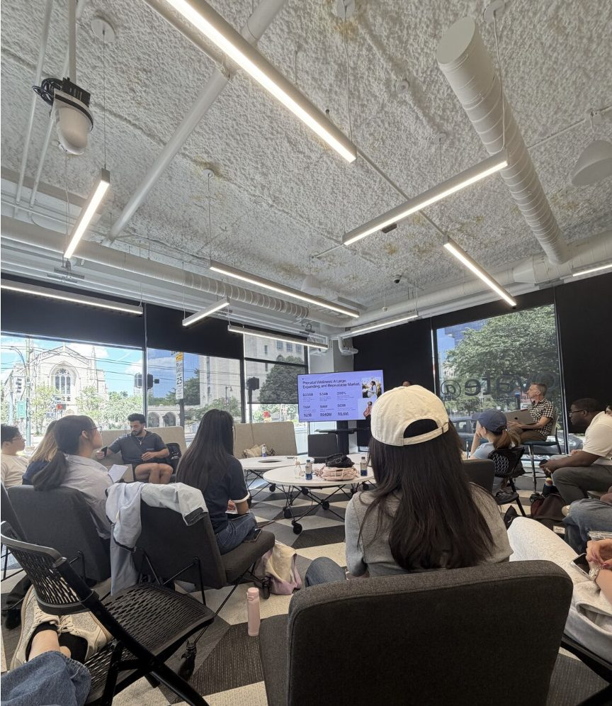

3.
Boston
Summer 2026 · Ideas to Impact, Boston University
What happens when summer school isn't a classroom?
Boarding pass · Ideas to Impact
BOMBOS
Mumbai → Boston · Summer 2026
Stop03


I signed up for "Ideas to Impact" expecting a regular class. Instead, I spent the summer helping a real startup: Jakob's LET Tennis, under Prof. Yoo Jin Chung.
The problem: getting customers to take part in LET's sustainability work. So I interviewed strangers, role-played as a VC, and listened to pitches at Innovate@BU. Our answer was "The Loop", built to turn that into long-term loyalty.
Fig. 5 · The research
20+interviews
40+surveys
we guessed sustainability. the data said belonging.
The most useful data I collected that summer came from strangers, not books.